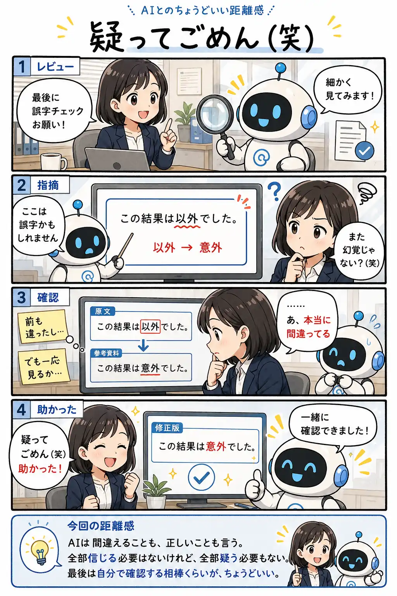

#049
疑ってごめん（笑）
幻覚を警戒していたら、本当に助けられた。

メモ
AIには、ときどき自信たっぷりに間違える場面があります。その経験をすると、次からは自然と慎重になります。
でも、その慎重さが強くなりすぎると、本当に役立つ指摘まで見逃してしまうことがあります。
AIを信じ切る必要も、最初から否定する必要もありません。「一度確認してみよう」というひと手間が、安心して付き合うためのちょうどいい距離感になります。
今回の距離感
AIは間違えることも、正しいことも言う。全部信じる必要はないけれど、全部疑う必要もない。最後は自分で確認する相棒くらいが、ちょうどいい。